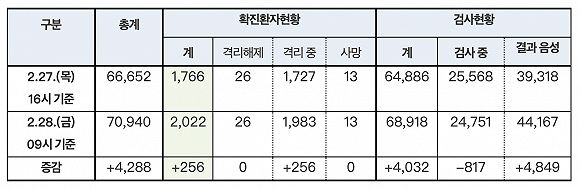

韩国日增100例确诊总数翻番，总统府警卫卷入疫情
原文链接 备份链接 韩国青瓦台。图片来源：维基百科 记者 ：肖恩 “ 韩国已累计确诊204新冠肺炎病例，是海外病例第二多的国家，仅次于邻国日本。 ” 在教会和军队相继出现新型冠状病毒肺炎感染病例后，十几名来自韩国总统府青瓦台的警卫也因为曾 …

图片来源：Yonhap
“
《东亚日报》指出，截至27日上午，加上民间医疗机构，韩国总共仅有1077张负压病床，已远少于确诊病例人数。
”
韩国中央防疫对策本部2月28日通报，截至当天上午9时，韩国较昨日新增256例新冠病毒感染病例，累计确诊2022例，死亡13例，治愈26例。
在新增的256例病例中，分别有182例和49例来自大邱和庆北地区。截至目前，除确诊患者外，韩国接受病毒检测的人数累计68918人，其中44167人的检测结果呈阴性，其余24751人的结果还未出炉。

来源：韩国中央防疫对策本部
目前，韩国超八成确诊病例集中在大邱和庆北这两个相邻地区，分别有两个主要的传染发生地：新天地大邱教会和庆北清道郡大南医院。
在截至28日上午9点累计确诊的2022例新冠肺炎病例中，分别有1314例和394例来自大邱和庆北地区，占比65%和19.5%。在截至27日上午9点累计确诊的1595例新冠肺炎病例中，分别有731例与114例与新天地大邱教会及清道郡大南医院有关，占比45.8%和7.1%。
韩国卫生部门自26日起已对全国约21万名新天地教会信徒展开检测。韩国中央防疫对策本部长郑银敬27日说，目前9000余名新天地大邱教会信徒中，1299例有症状待查病例已完成标本采集，预计这两天新病例的数量还会激增。
与大南医院有关的病例数量近几日则未见明显增加，该医院共有103名患者、10名医护人员与1名患者家属确诊，但在截至目前的13例死亡病例中，有7例均出现在该医院，另有4例与新天地教会有关。
据韩联社27日报道，随着国内感染新冠病毒的确诊病例不断增多，韩国民营医疗机构已纷纷开放负压病房等设施，以缓解国家定点医疗机构的负压病房紧缺问题。
据韩国医疗界当天消息，该国规模最大的民营医疗机构——首尔峨山医院和三星首尔医院当天分别开放6间和22间负压病房，供新冠肺炎确诊患者接受治疗。延世大学医疗院则决定从3月2日起为新冠肺炎病例提供22间负压病房，首尔圣母医院也在讨论相关事宜。
《东亚日报》当天早些时候曾指出，加上民间医疗机构，韩国现有的感染者隔离治疗用负压病床总共仅1077张，已远少于累计确诊的病例人数，必须尽快重新制定医疗资源分配战略，为可能出现的“持久战”做好准备。
据韩联社报道，27日出现的第13例死亡病例便是因病床不足，在等待住院的过程中病重不治。
未经授权 禁止转载

原文链接 备份链接 韩国青瓦台。图片来源：维基百科 记者 ：肖恩 “ 韩国已累计确诊204新冠肺炎病例，是海外病例第二多的国家，仅次于邻国日本。 ” 在教会和军队相继出现新型冠状病毒肺炎感染病例后，十几名来自韩国总统府青瓦台的警卫也因为曾 …
原文链接 备份链接 韩国1月20日发现首例确诊病例，此后一个月疫情发展缓慢，到2月18日确诊31例。2月19日后突然暴增，一周新增超过1200例。 18日确诊的第31号患者，被视为“超级传播者”。 韩国新冠疫情的一大特征是，在特定群 …
原文链接 备份链接 韩国已经过了政府防疫部门能独立控制疫情的阶段，现在已经进入整个社会都要配合防疫的关键时期。根据相关部门的推演，3月3日之前将是韩国是否能有效控制疫情的时间窗口 2月23日，在韩国大邱，工作人员在一家市场内进行消毒工作。 …
原文链接 备份链接 图片来源：Kyodo News “ 京畿道地方政府解释说，虽然新天地教会方面已经承诺提供信徒名单，但京畿道“等不及也并不完全相信”该教会提供的名单，因此采取了突袭搜查行动。 ” 韩国中央防疫对策本部26日通报说，截至当 …
原文链接 备份链接 仁川国际机场。图片来源：Yonhap 记者：潘金花 “ 文在寅强调，“最大程度封锁”措施并非封堵和围困该地区，而是最大限度阻断疫情扩散，有关部门需争取使疫情拐点在本周之内到来。 ” 韩国中央防疫对策本部25日通报说，截 …